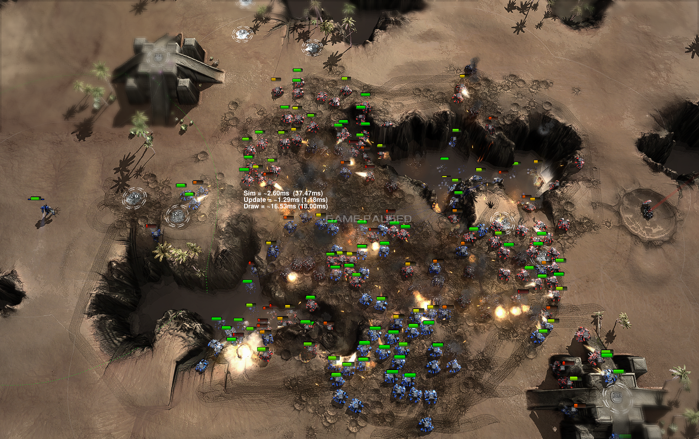
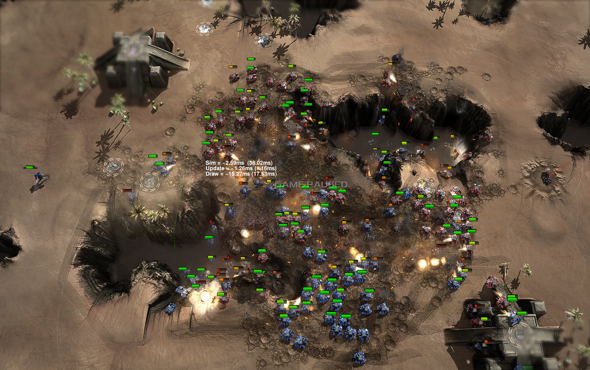

53.69 → 58.62 FPS · +9.18%
Seths Ravine 전투 · Ultra · AA OFF · 1512×950. 매회 게임을 다시 시작해 10초 워밍업 뒤 40초를 측정했습니다. 기존·새 버전 각각 3회이며 유효한 6회 결과를 모두 포함했습니다. 화면 꺼짐 FPS 감소는 OFF입니다.
회차별 1% low의 평균: 46.35 → 48.72 FPS. 이는 세 회차 low의 산술평균이며 전체 프레임을 합친 low가 아닙니다.
| 실행 순서 | 평균 FPS | 1% low | 측정 초 | 증거 |
|---|---|---|---|---|
| A1_BASE | 53.691 | 47.009 | 40.007 | 화면 |
| B1_S01 | 58.650 | 48.780 | 40.000 | 화면 |
| B2_S01 | 58.616 | 49.080 | 40.006 | 화면 |
| A2_BASE | 53.693 | 46.218 | 40.005 | 화면 |
| A3_BASE | 53.693 | 45.833 | 40.005 | 화면 |
| B3_S01 | 58.597 | 48.290 | 40.002 | 화면 |
슬라이더 왼쪽은 새 버전 B3, 오른쪽은 기존 A1입니다. 같은 카메라·전투 상태이며 효과와 시간 표시는 달라질 수 있습니다. 이미지 전체 바이트 일치를 뜻하지 않습니다.


실제 측정 구간은 6회 모두 simulation 540–1740입니다. 실행 계획의 일부 메타데이터에 남은 600–1800은 이전 표기이며, 원본을 보존하고 실제 로그 기준으로 집계했습니다.
별도 캡처에서 데칼 Fragment와 Grass Vertex의 실제 작업 중첩을 확인했습니다. 새 경계와 이전 입력 생성·다음 그리기 순서도 확인했습니다. 정확한 중첩 시간 합계와 Store/Load만의 비용은 측정하지 않았습니다. 이 FPS 결과는 진단 도구를 끈 별도 6회 측정입니다.
합성 GPU 128개 사례의 색상·깊이·스텐실 일치, 실제 게임 Metal 검증 오류 0, 양성 경계 적용 검증을 통과했습니다. 새 캡처에는 attachment/root 상세가 내보내지지 않았으므로 해당 안전성은 고정 소스의 검사와 실제 검증에 근거합니다. 눈에 띄는 화면 누락·깨짐은 대표 A1/B3에서 보이지 않았습니다.
이 결과는 해당 로컬 AA0 전투 장면의 opt-in 후보에 한정됩니다. 화면 표시 지연이나 단독 GPU 실행 시간을 측정한 수치는 아닙니다. 일반 맵·다른 백엔드·출시 버전 전체의 효과로 확대하지 않습니다.
집계 원자료 · 6회 표 CSV · 조건·전투 일치 확인 · 캡처 검증 · 정상 종료
기존 87df3a1bc49a5fca4c47d05de1a41a5d85f464941365b8d20f7ee2eca1e4108f
후보 9a44a0b109d77a561f08080dafeac1db8dd5d9655ef6002be379a17feee94aa0